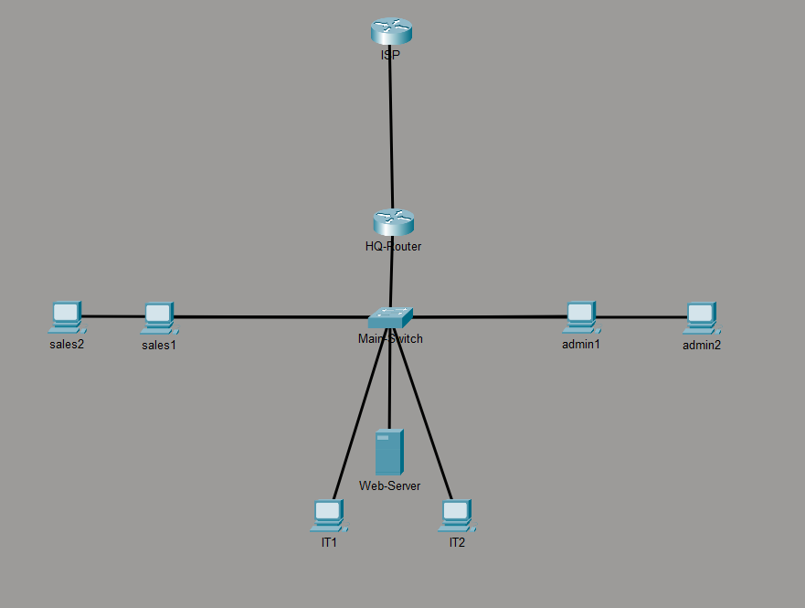

Networking lab
Medium Enterprise Network Architecture | Cisco Packet Tracer

Designed and deployed a complete multi-department branch network topology featuring 802.1Q Router-on-a-Stick inter-VLAN routing, dynamic DHCP addressing, and border security via Extended ACLs. Configured Dynamic NAT Overload (PAT) on the edge router to map internal private subnets (192.168.0.0/16) across a simulated ISP WAN connection to public endpoints (8.8.8.8).
Packet Tracer
HSRP